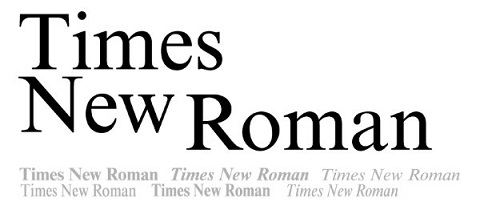
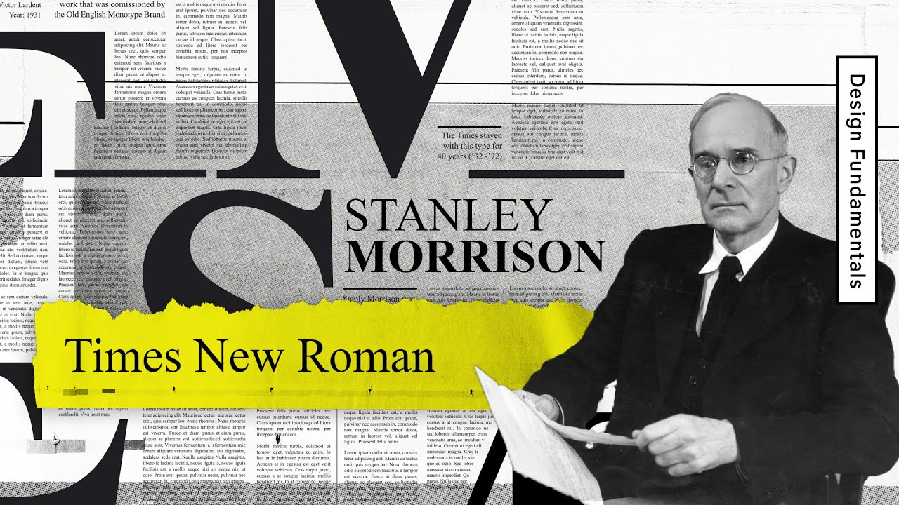
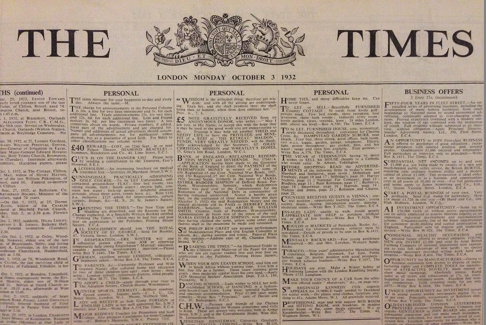

On this page

A transitional serif typeface that embodies institutional authority, editorial objectivity, and the quiet standardisation of knowledge.
Designed by:
Stanley Morison

Foundry:
The Times (London) / Monotype
Country:
🇬🇧 United Kingdom
Year:
1931
Intent
- Designed for newspaper readability
- Optimised for efficient use of space
- Meant to feel authoritative, neutral, and professional
- Created to perform well under poor printing conditions
Context
- Growth of mass media and daily newspapers
- Need for typefaces that balanced clarity and economy
- Interwar period Britain: emphasis on tradition, order, and credibility
- Typography focused on function over expression
Type classification
- Serif
- Transitional serif
Characterised by
- High contrast between thick and thin strokes
- Narrow letterforms (space-efficient)
- Sharp, bracketed serifs
- Relatively large x-height
- Feels formal, serious, and conservative
Examples in use
- The Times newspaper (historic use)
- Academic papers and journals
- Books, reports, and legal documents
- Default system font in Microsoft Word (for decades)

Why designers still use it
- Extremely readable in long-form text
- Familiar and widely available
- Conveys authority and credibility
- Performs reliably in print
When not to use it
- Branding that needs a strong or unique personality
- Contemporary or experimental design
- Large headlines (can feel stiff or dated)
- Situations where neutrality feels impersonal
Usage
Use Times New Roman when clarity and credibility matter more than personality.
Why it matters for UX
Times New Roman was designed to save space and stay readable in cheap newsprint, a functional brief like any UI problem. Its fate as the default font also shows that defaults send a message: using it unchanged often says "no one chose this".
Try it: default or decision? (15 minutes)
- Find three documents or websites set in Times New Roman.
- For each, decide whether it was a deliberate choice or a default.
- Pick one and suggest a typeface that would serve it better, with one sentence of reasoning.
Media
Resources
Key takeaways
- Times New Roman (1931) is a transitional serif designed for newspaper readability.
- Narrow letters save space; it conveys authority and credibility.
- As a long-time default, it can look unconsidered; choose it deliberately.
Finished this part?